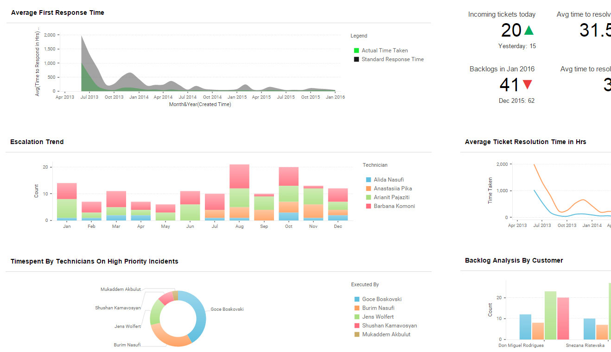
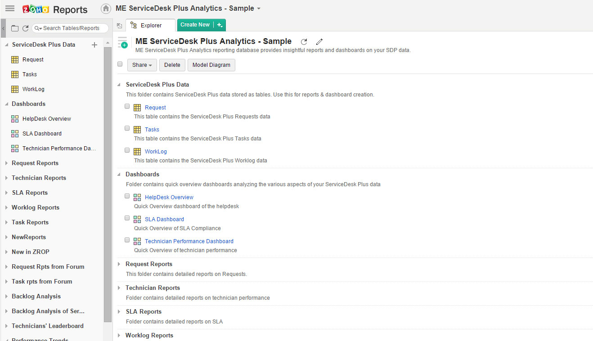
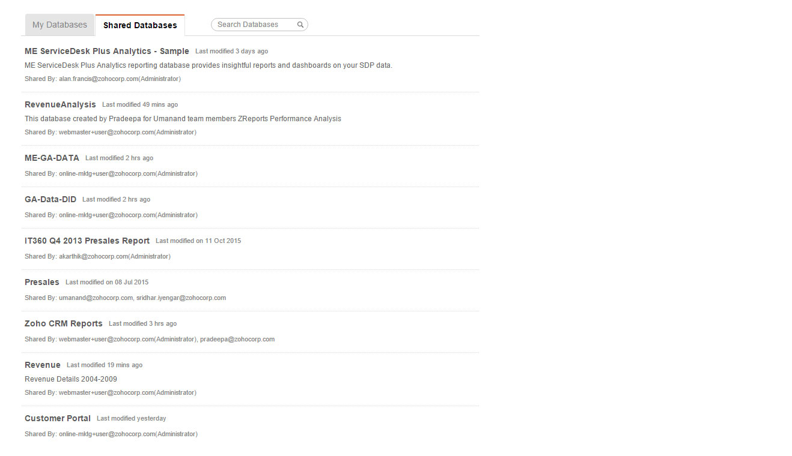
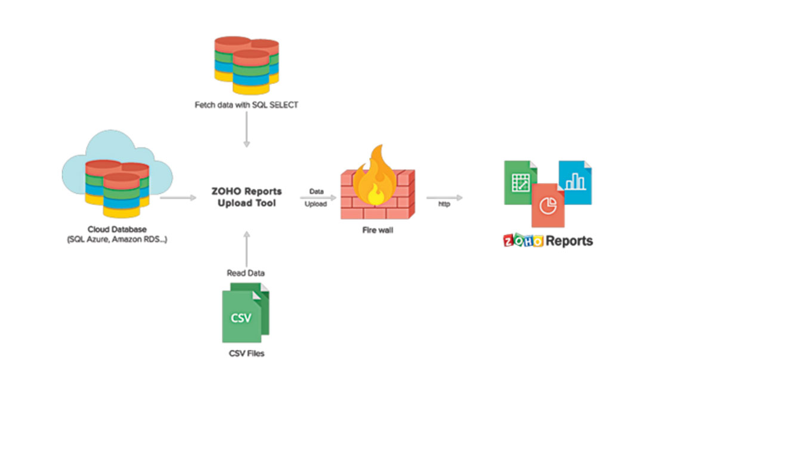

使用100多种现成的报表和仪表板，在几分钟内分析ServiceDesk Plus数据。 使用简单的拖放界面构建交互式可视化文件。 与ServiceDesk Plus的现有集成可自动同步您的帮助台数据，从而为您提供实时报表和仪表板，以便做出明智的决策。
ServiceDesk Plus高级报表分析同时有本地部署和云部署。

各种图表和可视化呈现ServiceDesk Plus数据，更直观更生动。 从仪表板轻松设定特定时间段，获取有价值的指标。 高级报表集成可在单个窗格中填充“事件”，“服务请求”，“变更”，“问题”和“资产”模块中的信息。

多年以来，我们已经预配置了许多ServiceDesk Plus用户要求的大量直观报表。 ServiceDesk Plus数据集成和自动分析只需不到5分钟！

为技术员和经理提供基于角色的仪表板访问权限，并以交互方式开发定义帮助台性能的关键指标。 用户界面友好，几乎无需专业技术知识即可开发仪表板和可视化。

不局限于ServiceDesk Plus数据？其他来源（例如Excel，CSV，XML，JSON，HTML，SQL和NO SQL数据库，API等）也可以提供数据。